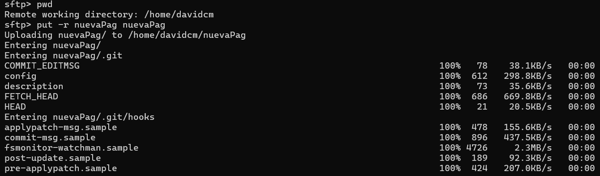
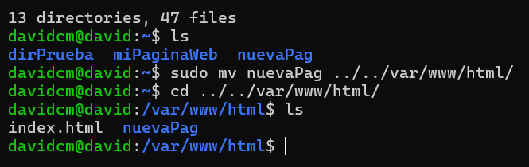
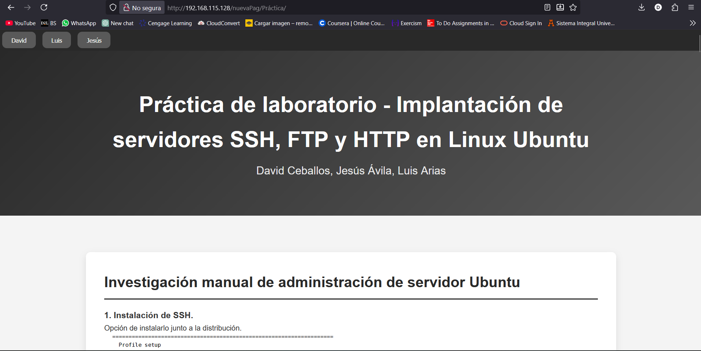
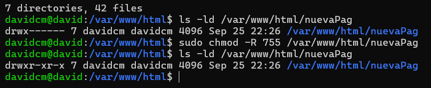
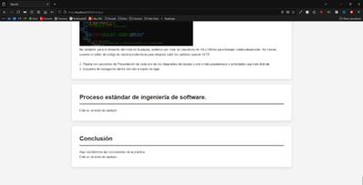

Investigación manual de administración de servidor Ubuntu
1. Instalación de SSH.
Opción de instalarlo junto a la distribución.

Opción de instalarlo desde la terminal.

2. Instalación y configuración de FTP.


3. Instalación de servidor LAMP.


Servicios SSH, FTP, LAMP
1. SSH
-> protocolo de red criptográfico
-> permite operar servicios de red de forma segura sobre una red no segura
-> se utiliza principalmente para acceder y gestionar de forma segura sistemas remotos
---------------------------------------------------------------------------------------
2. FTP
-> Utilizado para la transferencia de archivos de un host a otro a través de una red de computadoras
---------------------------------------------------------------------------------------
3. LAMP (Linux, Apache, MySQL, PHP)
-> Utilizado para desarrollar aplicaciones web dinámicas y sitios web
-> Proporciona un entorno robusto y flexible para construir, implementar y gestionar aplicaciones web
Instalación de SSH y acceso al servidor Ubuntu de forma remota
1. Instalación de SSH.
Durante la instalación de la distribución de Ubuntu, se da la opción de instalar SSH de forma muy sencilla.

En caso de no haber seleccionado esta opción, se necesita del comando "sudo apt install openssh-server".

2. Acceso desde la máquina local con SSH
Lo primero que se tiene que hacer, es obtener la IP con el comando "ifconfig", en este caso es: 192.168.115.129.

Se anota la IP, para, posteriormente, ingresar el comando "ssh [nombreUsuario]@[IP]" desde la terminal local.
Después te pedirá aceptar un algoritmo SHA256 para firmar una fingerprint, se selecciona "yes" y se ingresa la contraseña.
Al realizar estos pasos, se está manejando el sistema operativo Linux, desde la terminal local (Microsoft).

Instalación y configuración de FTP para escritura y lectura. Validación de la funcionalidad
1. Instalación de FTP.
Se requiere el siguiente comando: "sudo apt install vsftpd".

2.Accesos desde la máquina local con FTP
Es un proceso muy similar al acceso con SSH, el comando es "sftp [nombreUsuario]@[IP]" y la contraseña del usuario.

3. Uso de get y put con SFTP
SFTP permite mandar archivos de una máquina a otra.
Para mandar archivos locales a la máquina virtual se usa "put" y el nombre del archivo.
En este caso, mandaremos el archivo anahuac.png que se enuentra en la parte final de mis archivos.


Por último, se comprueba que el archivo esté en la máquina virtual.

Instalación LAMP y servidor HTTP
1. Actualización de APT.
El primer paso es actualizar el paquete instalador apt, de la siguiente forma:

2. Instalación de tasksel.
Se instala tasksel con "sudo apt-get install -y tasksel".

3. Instalación de LAMP Server.
Con el paquete tasksel, se instala lamp-server con "sudo tasksel install lamp-server".

4. Instalación de Apache.
Con el paquete tasksel, se instala Apache con "sudo apt install apache2".

5. Visualización en navegador local.
Ahora, si se ingresa la IP de la máquina virtual en el navegador local, podremos ver la página predeterminada de Apache.

6. Visualización en navegador virtual.
También se puede ingresar desde la máquina de Linux, ingresando "localhost" en el navegador.

Desarrolla una página Web
1. Componentes desplegados en el servidor Linux Ubuntu.
Al entrar a la máquina virtual y movernos a la carpeta var, vamos a poder ver que se instalaron componentes como www y http. Al ingresar en la carpeta, podemos ver con "ls" el index predeterminado. Creamos la carpeta de cada quien y con ayuda de nano, creamos un index para cada carpeta. Además, definimos un archivo css general que sea aplicado a toda la página.


No obstante, para el desarollo del resto de la página, optamos por crear un repositorio de Git y GitHub para trabajar colaborativamente. Así mismo, usamos el editor de código de nuestra preferencia para después subir los cambios usando SFTP.
2. Subir el desarrollo completo a la máquina virtual de Ubuntu.
Lo primero que se debe hacer es subir con sftp el archivo la carpeta completa del desarrollo.
Después, lo movemos a la carpeta deseada, en este caso var/www/html.
Por ultimo, visualizamos la página ingresando desde el navegador local.
En caso de ser necesario, se pueden modificar los permisos de acceso si no se puede acceder de manera externa a la página.
Proceso estándar de ingeniería de software
1. Comunicación: En esta actividad básicamente lo que hicimos fue entender a detalle lo que nos pedía el profesor en base a los requerimientos que nos puso en las instrucciones de la práctica, en el que hicimos la concepción del proyecto. En este caso, el proyecto consiste en una página web en el que se use como demostración de la virtualización de Ubuntu. Los detalles los obtuvimos por las instrucciones de la práctica. De igual forma, en este caso no se hacen casos de uso porque el único usuario final vamos a ser el equipo de desarrollo que va a usar el sitio web para la demostración al profesor. Entre los requerimientos de la página, se necesitaban vistas de la presentación de cada alumno y un reporte con todo el proceso de desarrollo de la página.
2. Planeación: En esta fase del proyecto, decidimos hacer una lista con los objetivos que debe de tener la página web (que en este caso fue la página individual por cada integrante del equipo y la página donde se explica la práctica como tal) en tareas más pequeñas para que el equipo pueda trabajar simultáneamente en cada una de las tareas y cumplir con el requerimiento del tiempo. Las actividades fue que cada uno de los integrantes hiciera su página y después que para la página de la práctica como tal que ahí nos dividiéramos por secciones distintas lo que cada uno iba a hacer. Para esta fase también se realizó una estimación simple sobre cada una de las actividades y el tiempo que iba a durar cada una de las actividades.
3. Modelado: Para este proyecto hicimos un pequeño bosquejo en el que pusimos nuestra visión sobre cómo podría verse el sitio web y con las especificaciones para que se pudiera programar adecuadamente. Para este bosquejo simple nos enfocamos en los requerimientos que obtuvimos anteriormente (las páginas por persona y la de la práctica). De igual forma hicimos un pequeño diagrama sobre cómo es que iba a ser la arquitectura del proyecto para que existiera unidad en este sentido.
4. Construcción: En esta etapa ya nos enfocamos en la construcción del código como tal y en la creación de los archivos html para poder generar el sitio web con las especificaciones que se comunicaron al principio con el pdf de las instrucciones. Aunque en este caso no fue necesario, en un escenario de escala más grande se deberían de hacer pruebas de unidad y de integración para asegurarnos de que el sitio web esté funcionando adecuadamente. Lo que sí se hizo fue una prueba de calidad para estar seguros que los requisitos se cumplan con los requerimientos establecidos.
5. Despliegue: Por último, en la etapa de despliegue se utilizó ya una vez que se terminó el sitio web y que hayamos comprobado que los requerimientos se hayan cumplido de forma satisfactoria. En proyectos de escala más grande con clientes deberíamos de comprobar con el cliente por retroalimentación y hacer pruebas de despliegue, pero como esta práctica no incluye un cliente más que el profesor, no se hicieron las retroalimentaciones ni las pruebas de calidad de software porque no creamos funciones como tal, sino que todo lo manejamos con el front del proyecto.
Conclusión
En conclusión, esta práctica nos ayudó a que pudiéramos implementar un sitio web funcional en local usando las herramientas de un editor de texto, con el propósito de que podamos utilizar los protocolos como SFTP y HTTP para poder hacer esta página web funcional desde una virtualización de Ubuntu. Aunque fue retador conocer la estructura de los archivos HTML, se superó este obstáculo y se pudo generar un producto de calidad para los fines de la materia. De igual manera, la práctica ayudó a que mejoremos nuestra habilidad de usar los comandos para poder usar los protocolos necesarios en caso de que necesitemos transferir archivos de un lugar a otro, sobre todo desde nuestra máquina local a nuestra máquina virtual.